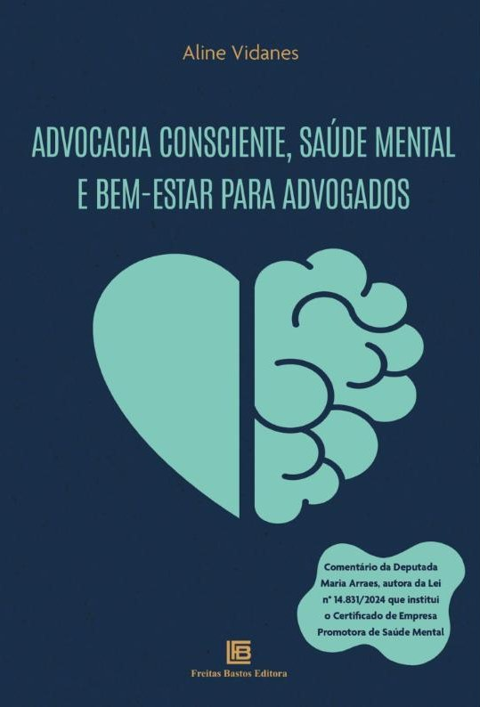

Escritórios
Programa para equipes
O protocolo completo aplicado a sócios, advogados e equipe de apoio, com avaliação no início e no fim. Como funciona o PAC →
Solicitar propostaO PAC, Programa Advocacia Consciente®, é um protocolo de 6 semanas, inspirado no MBSR e adaptado à advocacia, que ajuda advogados e equipes jurídicas a lidar melhor com pressão, prazos e conflitos, com medição do estresse percebido no início e no fim.
Autoavaliação gratuita · 10 perguntas · cerca de 3 minutos
O estresse vira parte do trabalho, até começar a cobrar o preço no sono, no foco, nas relações e na saúde.
“Durante anos, normalizamos o peso do estresse como se fosse parte indissociável da toga.”

Advogando, eu buscava uma forma de lidar com a pressão que coubesse na rotina, sem amarras religiosas. Encontrei no mindfulness, como definido por Jon Kabat-Zinn, uma prática laica, estudada pela ciência e aplicável em qualquer lugar, inclusive no fórum.
As mudanças foram tão claras que aprofundei os estudos: tornei-me instrutora certificada de mindfulness, fiz mestrado em Mindfulness e Compaixão na Universidad de Zaragoza e especializações em Neurociência do Comportamento e Neuropsicanálise.
Desde 2020 conduzo cursos presenciais e online. Daí nasceu o Programa de Redução de Estresse para Advogados, hoje PAC, Programa Advocacia Consciente®, e o livro que reúne o método.
Aline Vidanes
Um encontro ao vivo por semana, cerca de 45 minutos de vídeos e leituras semanais, e cerca de 30 minutos de prática diária, formal e informal, integrada à rotina jurídica, com diário de práticas.
O estresse é avaliado no início e no fim com a Escala de Estresse Percebido (PSS-10, Cohen et al., 1983), instrumento validado e usado internacionalmente.
Práticas adaptadas a quatro perfis comportamentais do modelo DISC: decisivo, analítico, expressivo e paciente.
Pensado para caber entre prazos e audiências, presencial ou online, para equipes em diferentes cidades e países.

Práticas laicas, descritas no livro Advocacia Consciente e treinadas como habilidades.
Use a Escala de Estresse Percebido (PSS-10), a mesma aplicada no início e no fim do PAC. São 10 perguntas sobre seus pensamentos e sentimentos nos últimos 30 dias. Responda com a primeira opção que vier à mente.
Escala criada por Cohen, Kamarck & Mermelstein (1983). A pontuação vai de 0 a 40; as faixas (0 a 13 baixo, 14 a 26 moderado, 27 a 40 alto) são uma referência de uso comum, não pontos de corte clínicos. Esta autoavaliação é educativa e não constitui diagnóstico. Em caso de sofrimento intenso, procure um profissional de saúde.
Quer receber a prática Respiração de 3 minutos para advogados e avisos das próximas turmas?

Fatores como estresse, sobrecarga e assédio devem integrar o gerenciamento de riscos ocupacionais das organizações com empregados, incluindo escritórios. Desde 26/05/2026, a fiscalização pode resultar em autuação. Entenda o que muda →
Certificação federal para organizações com ações de promoção da saúde mental, bem-estar dos trabalhadores e transparência.
Em 2024, mais de 472 mil afastamentos do trabalho foram concedidos por transtornos mentais no Brasil, alta de 68% em relação ao ano anterior (Ministério da Previdência Social).
Revisão de estudos associou alta demanda de trabalho a 35% mais chances de doenças diagnosticadas e jornadas longas a quase 20% mais mortalidade (Goh, Pfeffer & Zenios, 2015).
O PAC é um programa educacional de promoção de saúde mental. Pode integrar as ações do escritório nessas frentes, mas não substitui a avaliação técnica de segurança e saúde no trabalho exigida pela NR-1, nem acompanhamento psicológico ou médico.
O protocolo completo aplicado a sócios, advogados e equipe de apoio, com avaliação no início e no fim. Como funciona o PAC →
Solicitar propostaPara advogados e advogadas que querem aplicar o protocolo individualmente, com acompanhamento online.
Entrar na lista
A base do método, com práticas aplicadas e referências científicas. Freitas Bastos Editora.
Ver o livro
Para seccionais e comissões da OAB, eventos jurídicos, faculdades e escritórios. Ver temas →
Convidar
O protocolo em formato de curso, com videoaulas e práticas guiadas.
Avisar quando abrir
A Escala de Estresse Percebido (PSS-10), com resultado na hora e uma prática guiada por e-mail.
Fazer agoraO PAC usa ferramentas laicas, descritas na literatura científica e ensinadas como habilidades práticas.
Estresse, burnout, inteligência emocional, relações de trabalho e liderança na advocacia, com dez práticas aplicadas e referências científicas. Inclui texto da Deputada Maria Arraes, autora da Lei nº 14.831/2024.
“Não se trata de abdicar da excelência, mas de transformá-la: uma advocacia mais consciente é uma advocacia mais potente.”
Textos de Aline Vidanes sobre saúde mental, liderança e bem-estar na advocacia. Ver todos os artigos.
Reflexões a partir de uma reportagem do El Confidencial: ansiedade, esgotamento e o que falta para os escritórios agirem.
Ler o artigo →Como a forma de o líder lidar com a pressão afeta toda a equipe, e o que a neurociência ensina sobre liderar com consciência.
Ler o artigo →Concentração, menos estresse e relações mais fortes: o que a atenção plena pode mudar no dia a dia de quem advoga.
Ler o artigo →A partir de um artigo da Harvard Business Review, o papel da compaixão na liderança e nas relações profissionais.
Ler o artigo →Por que cuidar da saúde mental da equipe é também uma decisão de gestão, com efeitos em produtividade, relações e retenção.
Ler o artigo →Não. O programa usa mindfulness como treino de atenção, na linha das intervenções estudadas pela ciência, junto com neurociência do comportamento e psicologia do trabalho. As práticas são laicas.
Não. O protocolo parte do zero. A recomendação é reservar cerca de 30 minutos por dia para a prática, além de um encontro semanal ao vivo. Parte da prática é informal, feita durante atividades que você já realiza no dia a dia.
Sim. O programa pode ser aplicado presencialmente ou online, inclusive para equipes em diferentes cidades e países.
No início e no fim, cada participante responde à Escala de Estresse Percebido (PSS-10). A comparação mostra a mudança no nível de estresse percebido ao longo das seis semanas. Ao longo do programa, diários de prática ajudam a registrar as mudanças no dia a dia.
Não. É um programa educacional de promoção de saúde mental. Em caso de sofrimento intenso, o caminho é buscar um profissional de saúde.
Conte o que o escritório ou você procura. Retorno por e-mail, com uma proposta pensada para a sua realidade.